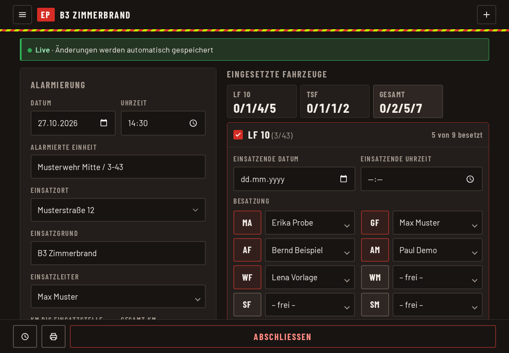
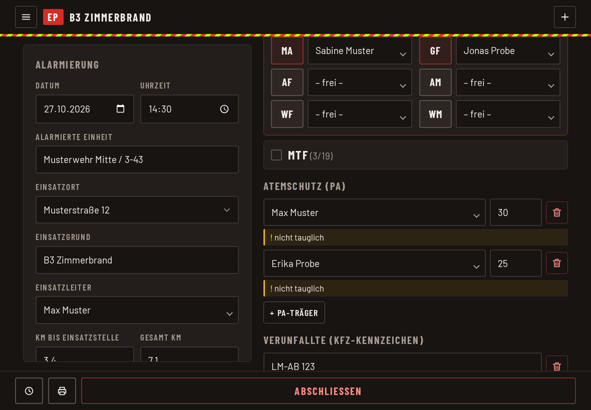
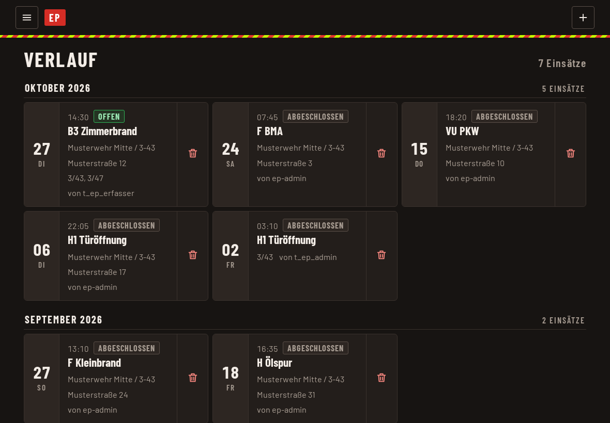

Einsatz protokollieren
Das Einsatzprotokoll gehört zur selben Adresse wie die Anwesenheit und ist für das iPad im Fahrzeug gedacht. Ein Einsatz wird dort in einem Bericht festgehalten, der sich während des Einsatzes laufend speichert.
Aufrufen und anmelden
- Auf der Startseite die Kachel Einsatzprotokoll antippen. Sie erscheint nur, wenn euer Konto eine Rolle im Einsatzprotokoll hat.
- Oder die Adresse der App mit /einsatzprotokoll/ am Ende öffnen.
- Ihr meldet euch einmal an, mit demselben Benutzernamen und Passwort für beides. Beim Wechsel von der Anwesenheit ins Einsatzprotokoll fragt die App nicht noch einmal. Wer nur eine Rolle im Einsatzprotokoll hat, landet nach der Anmeldung direkt dort.
- Läuft die Anmeldung mitten im Einsatz ab, öffnet sich die Anmeldung über dem Bericht. Nach dem Anmelden geht es dort weiter, wo ihr wart.
- Am Startbildschirm sind Anwesenheit und Einsatzprotokoll zwei getrennte Apps mit eigenem Symbol (AW und EP).
Einsatz anlegen
Normalerweise legt die Alarmierung den Einsatz selbst an. Dann ist er schon da, mit Alarmzeit, Einheit und Stichwort. Wird die Alarmierung nicht ausgelöst, legt ihr ihn selbst an:
- Im Menü „Einsatz erfassen“ wählen oder oben rechts auf das Plus tippen.
- Datum und Uhrzeit der Alarmierung prüfen. Beides ist Pflicht.
- Auf Speichern tippen. Ab jetzt ist der Einsatz „live“.
Live-Erfassung
Nach dem ersten Speichern gibt es keinen Speichern-Knopf mehr: Jede Änderung wird sofort gespeichert. Ein Hinweis oben zeigt „Live“ und „gespeichert vor … Sekunden“. Der Bericht gleicht sich außerdem alle paar Sekunden mit anderen Geräten ab, so können mehrere am selben Einsatz arbeiten.

Hinweis: Steht dort „Nicht gespeichert“, ist die Verbindung weg oder eine Änderung ist fehlgeschlagen. Sobald das Netz zurück ist, wird weiter gespeichert. Prüft danach, ob eure letzte Eingabe noch drinsteht.
Die Angaben
- Alarmierung: Datum, Uhrzeit, alarmierte Einheit, Einsatzort, Einsatzgrund, Einsatzleiter, gefahrene Kilometer. Einsatzort hat eine Vorschlagsliste mit häufigen Orten.
- FFen vor Ort: Hier hakt ihr die Feuerwehren an, die vor Ort waren. Darunter wählt ihr, welche zuerst an der Einsatzstelle war.
- Notizen: Freitext.
- Eingesetzte Fahrzeuge: Fahrzeug wählen und die Besatzung den Positionen zuordnen. Die Stärke (Verbandsführer, Unterführer, Mannschaft, Gesamt) wird daraus gezählt. Ein Tipp darauf springt zum Fahrzeug.
- Atemschutz (PA): Mit „+ PA-Träger“ eine Person wählen und die Einsatzdauer in Minuten eintragen. Eine Zeile weist darauf hin, wenn die Person kein AGT-Kennzeichen hat, nicht tauglich ist oder der Nachweis bald abläuft.
- Verunfallte: Mit „+ Kennzeichen“ tragt ihr Kennzeichen von verunfallten Fahrzeugen ein.

Personen auswählen
Einsatzleiter, Besatzung und PA-Träger wählt ihr aus einer Liste. Das iPad zeigt dafür seine eigene Auswahl, ohne Tastatur. Wer nicht in der Liste steht, etwa jemand von einer anderen Wehr, kommt über „Andere …“ am Ende in ein Textfeld.
Entfernen und Rückgängig
Entfernt ihr eine Zeile oder ein Fahrzeug, erscheint kurz die Möglichkeit „Rückgängig“.
Abschließen und Drucken
Ist der Einsatz beendet, schließt ihn der Admin mit „Abschließen“ ab. Danach ist der Bericht gesperrt. „Wieder öffnen“ hebt das auf.
Admin und Leser können einen Einsatz als PDF drucken (Druck-Symbol unten) und im Menü alle Einsätze als Excel exportieren.
Vorherige Einsätze
Im Menü „Vorherige Einsätze“ stehen die Berichte, nach Monaten sortiert, offene und abgeschlossene. Erfasser sehen dort die eigenen und alle offenen. Admin und Leser sehen alle. Ein „Leser“ darf nur ansehen, nicht ändern. Nachgetragene Einsätze sind gekennzeichnet.
